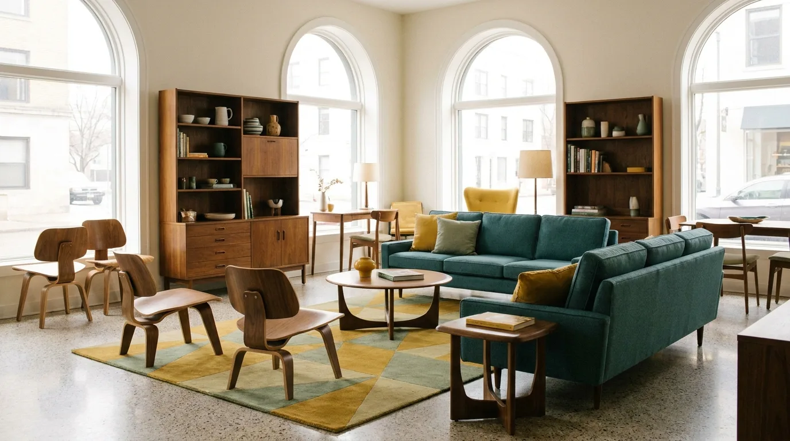

ARC · 躺椅
弧
一體成形的層積彎曲扶手,順著手臂與背脊的角度托住身體。中世紀經典比例,是閱讀與午後小憩的座位。可選胡桃木、白橡或梣木框架。
一體成形的層積彎曲扶手,順著手臂與背脊的角度托住身體。中世紀經典比例,是閱讀與午後小憩的座位。可選胡桃木、白橡或梣木框架。

低背三人座,實木弧形扶手如沙丘般綿延。坐墊採高回彈獨立筒,布料可選孔雀綠、芥末黃與燕麥米。底座以白橡實木手工榫接。

圓潤的桌緣像屋簷一樣收住邊角,搭配彎曲木餐椅,坐感輕盈。適合四至六人,可加購延伸桌板。桌面採無接縫實木拼板。

細錐形腳座撐起輕盈量體,推門內藏可調層板與線槽。孔雀綠烤漆飾板與胡桃木紋對話,是客廳與餐廳之間的低調主角。
展示的價格為標準規格起價。由於每個家的尺度與光線都不同,我們提供完整的客製服務:
訂製作品的製程約需 6 至 10 週,完成後由團隊到府安裝。歡迎先預約展間,親自感受材質與弧度。